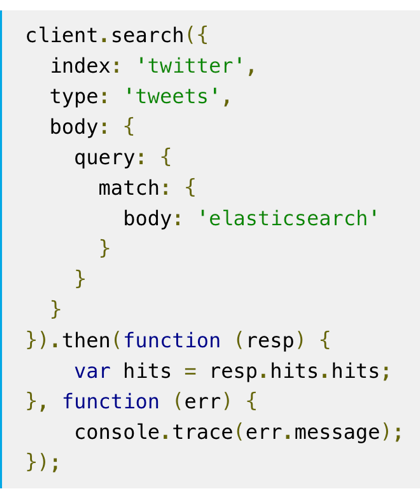

class: center, middle # Elasticsearch ## Mappings and Documents --- # Elasticsearch Review * Used for: Searches, Logging, Analytics * full text search, online stores "suggested for you", calculating geospatial data * Stores data in JSON format * Distributed - allows for lots of data, can search very fast * But write speed is slow compared to SQL * Data integrity is an issue * Do not use as a primary datastore * ElasticSearch is a NoSQL datastore. --- # NoSQL Data Stores * NoSQL really means "Not SQL" * There are no rows, just documents. (i.e. JSON) * There are no tables, just indices of documents. * There are no schemas, just whatever attributes are contained in the documents. (i.e. JSON) * Each attribute has a type. --- ## Document Example The following is a document. All of the airport documents as a group are an index. ```json { "_index": "airwaze", "_type": "doc", "_id": "CvExRWEBwC2aoUMP7lNh", "_version": 1, "_source": { "name": "Port Moresby Jacksons International Airport", "airport_id": 5, "elevation_ft": 146, "location": { "type": "point", "coordinates": [ 147.22000122070312, -9.443380355834961 ]}}} ``` # Elasticsearch Index * An index is a collection of similar data (books, people) * Each piece of data is a document (like one record in SQL, a specific book) * Each document is made up of fields, sometimes called properties * Each field has a type, just like in SQL * The types interact with searches. For instance, a geo distance query can only be run on a `geo_point` field --- # Document Mapping * A mapping defines how the document and its fields are stored and indexed -- * You might think of this like a schema in SQL -- * A field can be indexed multiple times in different ways. For example, a username might be treated as a text field for full-text search but also in a keyword field for sorting and aggregation. --- # Field Types * Field datatypes include: * `text`, `keyword`, `date`, `boolean`, `ip`, `double` * object or nested data, which support nesting JSON * specialized types like `geo_point`, `geo_shape`, `completion` --- # _id * Lucene/ES uses a foreign key `_id`, just like many other databases * The contents will be a hash, not sequential numbers * This is to avoid collisions: two records accidentally being assigned the same `_id` because two nodes tried to write at the same time * Since data is potentially distributed to many servers, managing unique ids is complicated --- # Mapping Explosions You can map data dynamically! Hey, we’ve been doing it! * For dynamic fields, new field names will be auto added. If you don’t send ES data on the fields, it does this. * Some field types won’t be mapped correctly automatically (like geopoints). * This is very powerful but can get out of hand, leading to resource issues, referred to as **mapping explosions** * You can set limits to the number of fields, and how deep it can be nested to prevent such issues --- ## Queries: Simple Matching Find anything close. ```json GET _search { "query": { "match": { "name": "TEXT" } } } ``` --- ## Queries: Filter Find only fields matching the criteria. ```json GET _search { "query": { "bool": { "filter": [ { "range" : { "elevation_ft" : { "gte" : 1100 } }}]}}} ``` --- ## Queries: Aggregations: Perform calculations on groups of documents. ```json GET _search { "aggs": { "avg_elevation": { "avg": { "field": "elevation_ft" } } } } ``` --- ## Queries: Pagination `size` limits results returned `from` allows easy pagination ```json GET _search { "query": { "bool": { "should": [ { "match": { "name": "Airport" } } ] } }, "from": 0, "size": 50 } ``` --- # When Data Changes If you want to add or a change a field in your mapping, you must **reindex** -- The `_reindex` API allows you to create a new index with a new mapping: ``` POST _reindex { "source": { "index": "book" }, "dest": { "index": "book_" } } ``` --- # Reindexing Notes * `_reindex` doesn’t actually change data in place. **Index mappings are immutable.** * It copies data over from an old index into a new one quickly. You still have to set up the new one first. --- # What about Joins? * ElasticSearch is composed of only documents, no tables. * Joining with other documents is technically possible, but not recommended. * Let's look at an example. --- # Parent Child Relationships * Documents that are related should be stored in a parent child relationship. * There will be one document, that has nested JSON inside of it. For Example: * For each airport, there are many routes.. * Instead of two tables, each airport will contain the JSON for all routes. --- # Parent Child Example ```json { "_source": { "name": "Port Moresby Jacksons International Airport", "airport_id": 5, "elevation_ft": 146, "routes": [ { "src": "STL", "dst": "LAX", "airline": "NZ" } ] ] } } ``` --- # Kibana **DevTools for ElasticSearch** Kibana sits on top of your ElasticSearch Kibana provides: * Fast, convenient way to access the data in your cluster. * DevTools to run queries (no more cURL). * Visualizations so that you can analyze your data. _Walkthrough_ --- # Elasticsearch.js * We will be using [Elasticsearch.js in jQuery](https://www.elastic.co/guide/en/elasticsearch/client/javascript-api/current/about.html) * Allow you to execute ElasticSearch queries directly from the browser. --- # Elasticsearch.js <div class = "left-column" > <ul> <li>Queries in this library are virtually the same syntax as regular Elasticsearch.</li> </ul> </div> <div class = "right-column" >  </div> --- # Requests in the Browser * We’re going to use JavaScript to have buttons submit searches on our data using Ajax. * We will have to manage CORS in order to do this * In the walkthrough we will show you how to tell your Elasticsearch cluster that your application is allowed to access the data, called “whitelisting.” * By default, web browsers are not allowed to make requests to other servers. This is to prevent data from being pushed and pulled from unauthorized web sites. --- # CORS, What Is It? * CORS stands for "cross origin resource sharing." * This is a W3 spec meant to prevent malicious behavior on websites. * CORS allows servers to specify not just who can access its assets, but also how the assets can be accessed. * Further reading: https://www.codecademy.com/articles/what-is-cors --- # More Practice! * In the walkthrough, you will practice retrieving and creating document mappings. * Then in the studio, you will set up Elasticsearch in your Airwaze project using Elasticsearch.js. * We’re going to write a query and handle it client-side using Ajax in jQuery. * ES Official Docs: https://www.elastic.co/guide/en/elasticsearch/reference/current/index.html